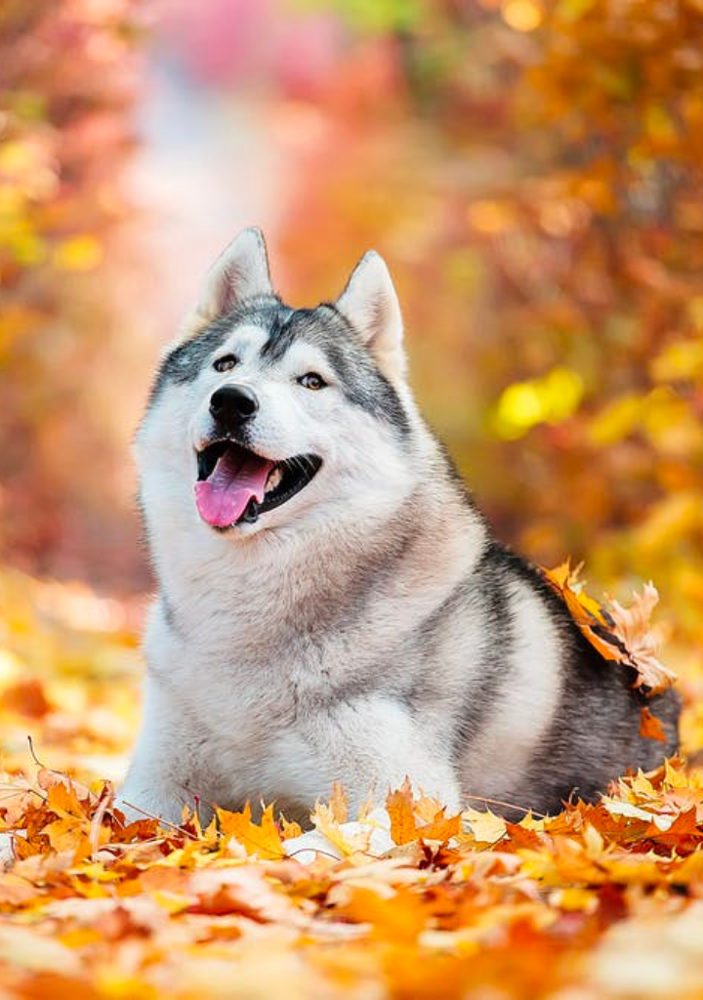

10.Husky
Siberian huskies are probably best-known for their incredible sled-pulling skills, but these doggies
aren't all business! Indeed, they make excellent working dogs, as they were bred originally to help
the Chukchi people of Siberia hunt more efficiently. But they're sweet, friendly, and loyal cuddle
bugs, too.
Image Description: Husky laying in fall leaves